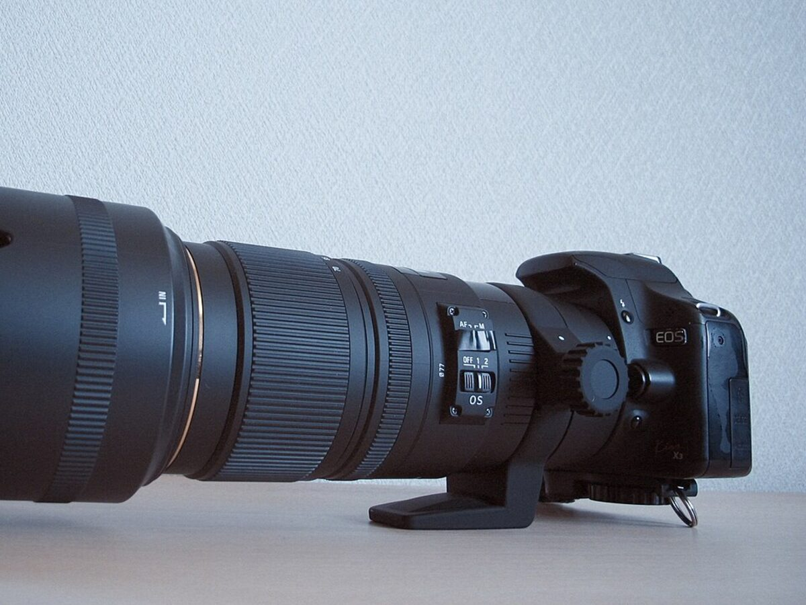
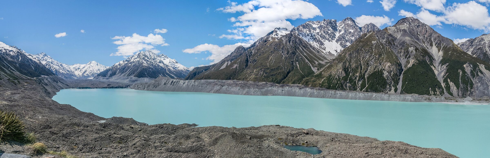
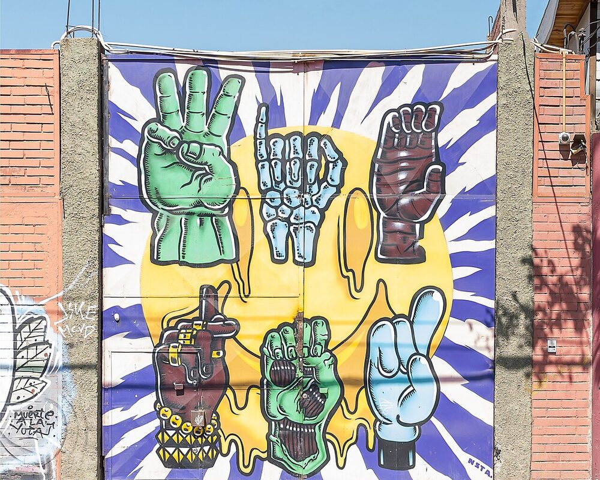

Basic Images with Alt Text
All images must have descriptive alt text for accessibility.

Practice adding images with alt text, captions, and sizing.
All images must have descriptive alt text for accessibility.
Use <figure> and <figcaption> for semantic image structure.

Images should scale to fit the screen size.

Build a gallery with multiple captioned images.
